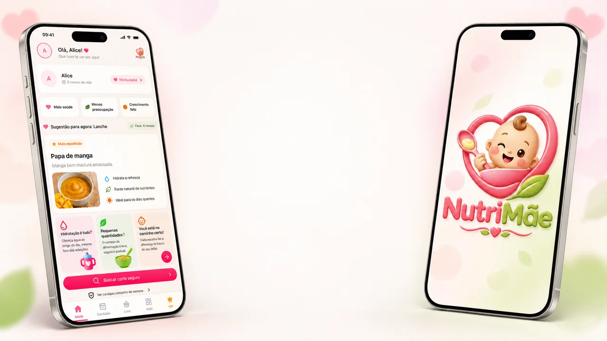

Planifica la semana, consulta el corte indicado y lleva la lista de compras al WhatsApp — directo en el celular.
El fin del "¿qué le ofrezco hoy?" está justo abajo — sin conjeturas, sin estrés.
7 días de garantía incondicional
Pago único, acceso de por vida — sin mensualidades
Bono liberado a medida que ves el video de arriba
✨ Bono desbloqueado
Cómo adaptar cualquier receta cuando falta un ingrediente
Abre la guía de sustituciones de la etapa de tu bebé y cambia el alimento indicado — sin perder el valor nutricional de la comida.
Demostración real
Una vista previa del producto en el celular, con guías, menús y consultas organizadas en pocos toques.

Video real de NutriMãe • sin simulación
Mamás con la rutina apretada
Que quieren practicidad sin renunciar a la organización.
Bebés de 6 meses a 2 años
Menús y cortes por etapa, desde la introducción alimentaria.
Familias que buscan organización
Todo planificado con anticipación, sin conjeturas.
Mamás que quieren tranquilidad
Todo pensado para facilitar el día a día con el bebé.
Menú por etapa
Sugerencias semanales organizadas por la franja de edad seleccionada.
Guía visual de cortes
Consulta formatos y maneras de ofrecer cada alimento en cada etapa.
Lista de compras lista
Genera tu lista de la semana y compártela por WhatsApp en 1 toque.
Recetas prácticas
Pensadas para facilitar la preparación y variar las comidas de la semana.
Lista de verificación de alergénicos
Sabe qué observar al introducir cada alimento nuevo.
Audiolibros y contenidos
Aprende a tu ritmo, escuchando mientras te ocupas de la rutina.
Comunidad de mamás
Comparte experiencias con otras mamás y con el equipo de NutriMãe.
Novedades cada semana
Nuevos menús, recetas y materiales, sin costo adicional.
La tarjeta de abajo cambia según la etapa elegida.
Esta demostración tiene solo 3 alimentos de ejemplo. En el acceso completo, la búsqueda cubre toda la guía.
Este es solo un ejemplo. En el acceso completo, cada alimento viene con la franja de edad, el corte indicado y el modo de ofrecer.
Es una guía de orientación rápida — para que no tengas que preocuparte sola. Está disponible para cualquier persona, sin necesidad de suscripción.
Conocer el Manual S.O.S.Crea tu cuenta
Registro rápido, en menos de 1 minuto.
Elige la etapa del bebé
La misma etapa que ya viste funcionando aquí arriba.
Recibe tu plan
Menú y cortes listos, directo en el celular.
Sigue las novedades
Contenido actualizado cada semana, incluido en el mismo acceso.
Directo de WhatsApp

Desliza hacia el lado para ver más testimonios ✦
Comparte experiencias y consulta conversaciones de otras mamás y del equipo de NutriMãe.
"Quería tener una referencia para consultar cuando surgiera alguna duda durante esta etapa. NutriMãe terminó siendo un apoyo en mi organización del día a día."
¿Cuánto tiempo toma consultar la app?
Menús y cortes quedan organizados por etapa para una consulta rápida en el celular.
¿Qué hace diferente a NutriMãe de materiales sueltos?
El contenido queda reunido en la app y organizado por la etapa elegida, con búsqueda y actualizaciones en el mismo acceso.
¿La aplicación es fácil de usar?
La navegación fue diseñada para llegar a los alimentos y menús en pocos toques.
¿Cómo funcionan las restricciones y alergénicos?
La guía señala alergénicos comunes. Las restricciones específicas deben ser acompañadas por el pediatra o nutricionista responsable.
¿Cómo funciona la garantía?
7 días de garantía incondicional. Sin formularios largos, sin necesidad de justificar.
¿Cómo se protege el pago?
El pago se procesa en un entorno protegido. La Política de Privacidad explica cómo se tratan los datos.

Cercanía detrás de cada platito
Soy Camille. Estoy aquí para mostrarte una forma más simple de organizar una rutina llena de pequeñas decisiones: qué ofrecer, cómo prepararlo y qué comprar para la semana.
Imagina la escena: se acerca la hora de comer, el refrigerador está abierto y esa receta que guardaste desapareció entre tantos mensajes. Para facilitar esos momentos, NutriMãe reúne menús por etapa, guía visual de cortes, recetas y sustituciones en un solo lugar — incluso la lista de compras puede ir directo a WhatsApp.
Para que pases menos tiempo buscando y tengas más espacio para disfrutar los descubrimientos en la mesa, al ritmo de tu familia.
Con cariño, Camille 💛
Pago único, acceso de por vida — sin mensualidades
Plan Básico · de por vida
$3.990pago único
Tarjeta de crédito o débito · sin mensualidades
Plan Completo · de por vida
De $44.900 por
3x de $3.300
o $9.900 al contado
Tarjeta de crédito o débito · sin mensualidades
Accede a NutriMãe por 7 días. Si no tiene sentido para tu rutina, te devolvemos el valor, sin preguntas.
Pago único, sin mensualidad — el acceso es de por vida.
¿NutriMãe reemplaza el acompañamiento profesional?
No. NutriMãe organiza menús, cortes e información para consultar en el día a día. No reemplaza la orientación del pediatra o nutricionista. En caso de alergia, restricción alimentaria o duda específica sobre el desarrollo, consulta al profesional responsable.
El contenido cubre la introducción alimentaria de los 6 a los 24 meses, separado por franja de edad. Si tu bebé ya pasó los 6 meses, puedes empezar a usarlo normalmente desde la etapa en la que está ahora.
Cada semana entran nuevos menús, recetas y contenidos, sin costo adicional — el mismo acceso ya incluye las novedades.
No. Los dos planes son de pago único — tarjeta de crédito o débito — y el acceso es de por vida, sin mensualidad ni cobro automático después.
Sí. Dentro de los primeros 7 días después de la compra, el reembolso es íntegro y sin trámites — solo tienes que hablar con el equipo por la app o el correo de contacto.
El Básico cuesta $3.990, pago único de por vida. El Completo cuesta $9.900 al contado (o en cuotas con tarjeta) e incluye gratis el bono Manual S.O.S. Destete Nocturno.
Sí, puedes hablar con el equipo de NutriMãe directo por la app o por el correo de contacto en el pie de esta página.
Tienes 7 días para acceder a todo y probarlo en la práctica. Si concluyes que no tiene sentido para tu rutina, solo tienes que solicitarlo dentro de ese plazo y el valor se devuelve íntegramente, sin necesidad de justificación.
Empieza ahora tu prueba con 7 días de garantía.